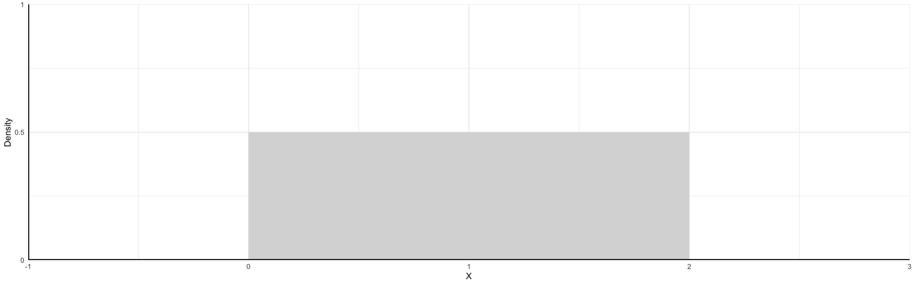
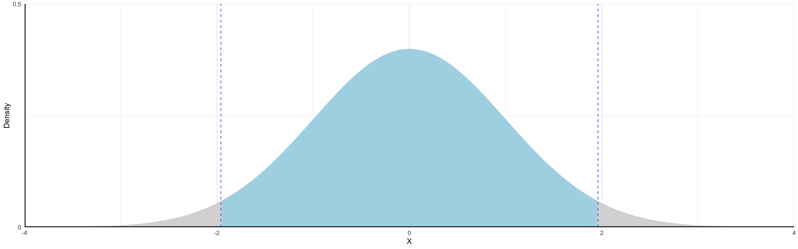

Probabilities of Continuous RVs
When the variable can take on an infinite number of possible values, the probability it takes on any given value must be zero.
The variable takes so many values that we cannot count all possibilities, so the probability of any one particular value is zero.
We can use probability density functions (PDFs) to help describe continuous RVs of which there are many but we will give emphasis to two:
- Uniform Distribution
- Normal Distribution
Distributions
A distribution is a function that represents all outcomes of a random variable and the corresponding probabilities. It is:
- A summary that describes the spread of data points in a set
- Essential for making inferences and assumptions from data
Key Takeaway: The shape of a distribution provides valuable information of the data
Uniform Distribution
The probability density function of a variable uniformly distributed between 0 and 2 is
\[\begin{align*} f(x) = \begin{cases} \dfrac{1}{2} & \text{if } 0 \leq x \leq 2 \\ 0 & \text{otherwise } \end{cases} \end{align*}\]
Uniform Distribution
By definition, the area under \(f(x)\) is equal to 1.
The shaded area illustrates the probability of the event \(1 \leq X \leq 1.5\).
\[ P(1 \leq X \leq 1.5) = (1.5 - 1) \times 0.5 = 0.25 \]
Warning: Using `size` aesthetic for lines was deprecated in ggplot2 3.4.0.
ℹ Please use `linewidth` instead.
Normal Distribution
This is commonly called a “bell curve”. It is:
- Symmetric: Mean and median occur at the same point (i.e. no skew)
- Low-probability events are in the tails
- High-probability events are near the center
Attaching package: 'dplyr'The following objects are masked from 'package:stats':
filter, lagThe following objects are masked from 'package:base':
intersect, setdiff, setequal, union
Normal Distribution
The shaded area illustrates the probability of the event \(-2 \leq X \leq 2\) occurring
- To “find the area under the curve” we use integral calculus (or, in practice ).
\[ P(-2 \leq X \leq 2) \approx 0.95 \]

Normal Distribution
Continuous distribution where \(x_{i}\) takes the value of any real number \((\mathbb{R})\)
- The domain spans the entire real line
- Centered on the distribution mean \(\mu\)
A couple of important rules to recall:
- The probability that the random variable takes a value \(x_{i}\) is 0 for any \(x_{i} \in \mathbb{R}\)
- The probability that the random variable falls between \([x_{i},x_{j}]\) range, where \(x_{i} \neq x_{j}\), is the area under \(p(x)\) between those two values.
The area highlighted in the previous graph represents \(p(x) = 0.95\). The values \({-1.96,1.95}\) represent the 95% confidence interval for \(\mu\)
Primary Differences in Expected Values by RV Type
To find the expected value or variance of a continuous random variable instead of a discrete random variable, we just swap integrals for sums and the PDF \(f(X)\) for \(p_{i}\):
| \(E[X]\) | \(Var(X) = E[(X - \mu_{X})^{2}]\) | |
|---|---|---|
| Discrete | \(\sum_{i=1}^{n} x_{i}p_{i}\) | \(\sum_{i=1}^{n} (x_{i} - \mu_{X})^{2} p_{i}\) |
| Continuous | \(\int X f(X) dX\) | \(\int (X - \mu_{x})^{2} f(X) dX\) |